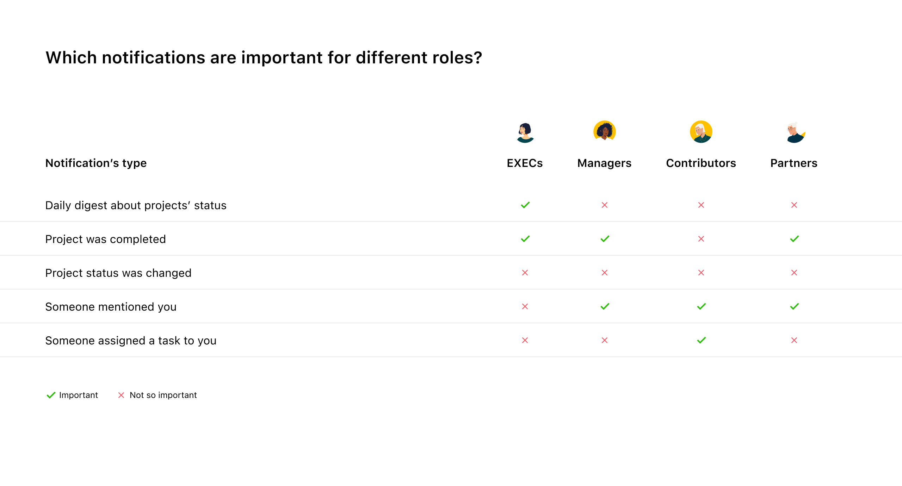
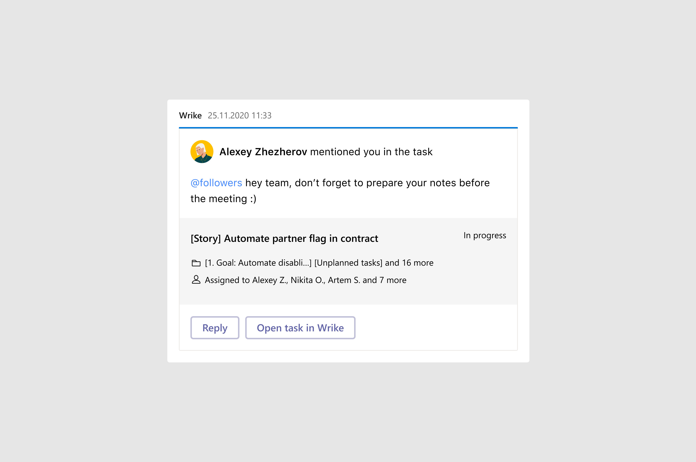
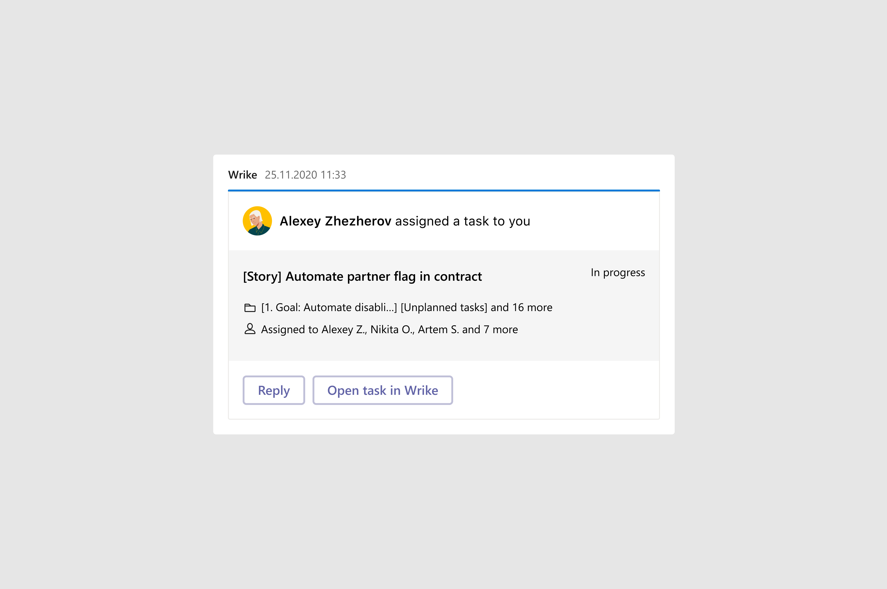

<!DOCTYPE html>
<html>
  <head>
    <meta charset="utf-8">
    <meta name="viewport" content="width=device-width, initial-scale=1.0">
    <meta name="description" content="Рассказываю о&amp;nbsp;проблемах, с&amp;nbsp;которыми мы столкнулись в&amp;nbsp;процессе проектирования и&amp;nbsp;как мы решали их с&amp;nbsp;помощью пользователей">
    <meta property="og:type" content="article">
    <meta property="og:title" content="Как мы проектировали уведомления для&amp;nbsp;MS Teams • Артём Самсонов • Продуктовый дизайнер">
    <meta property="og:description" content="Рассказываю о&amp;nbsp;проблемах, с&amp;nbsp;которыми мы столкнулись в&amp;nbsp;процессе проектирования и&amp;nbsp;как мы решали их с&amp;nbsp;помощью пользователей">
    <meta property="og:image" content="http://artemsamsonov.com/img/case-02.jpg">
    <meta property="og:locale" content="ru_RU">
    <meta name="twitter:card" content="summary_large_image">
    <meta name="twitter:title" content="Как мы проектировали уведомления для&amp;nbsp;MS Teams • Артём Самсонов • Продуктовый дизайнер">
    <meta name="twitter:description" content="Рассказываю о&amp;nbsp;проблемах, с&amp;nbsp;которыми мы столкнулись в&amp;nbsp;процессе проектирования и&amp;nbsp;как мы решали их с&amp;nbsp;помощью пользователей">
    <meta name="twitter:image" content="http://artemsamsonov.com/img/case-02.jpg">
    <link href="https://fonts.googleapis.com/icon?family=Material+Icons" rel="stylesheet">
    <link rel="stylesheet"><!-- Yandex.Metrika counter --> <script type="text/javascript" > (function(m,e,t,r,i,k,a){m[i]=m[i]||function(){(m[i].a=m[i].a||[]).push(arguments)}; m[i].l=1*new Date();k=e.createElement(t),a=e.getElementsByTagName(t)[0],k.async=1,k.src=r,a.parentNode.insertBefore(k,a)}) (window, document, "script", "https://mc.yandex.ru/metrika/tag.js", "ym"); ym(88097279, "init", { clickmap:true, trackLinks:true, accurateTrackBounce:true, webvisor:true }); </script> <noscript><div></div></noscript> <!-- /Yandex.Metrika counter -->
    <title>Как мы проектировали уведомления для&amp;nbsp;MS Teams • Артём Самсонов • Продуктовый дизайнер</title>
    <script type="application/ld+json">
      {
        "@context": "https://schema.org",
        "@type": "Person",
        "name": "Артём Самсонов",
        "url": "https://artemsamsonov.com",
        "image": "https://artemsamsonov.com/og-preview.jpg",
        "sameAs": [
          "https://t.me/forrrealism",
          "https://www.linkedin.com/in/a-samsonov/"
        ],
        "jobTitle": "Ведущий продуктовый дизайнер",
        "worksFor": {
          "@type": "Organization",
          "name": "getmatch"
        }
      }
    </script>
  <link href="./css/style.bundle.css" rel="stylesheet"></head>
  <script type="application/ld+json">
    script(type="application/ld+json").
      {
        "@context": "https://schema.org",
        "@type": "CreativeWork",
        "name": "Уведомления из Wrike в Microsoft Teams",
        "description": "Кейс про проектирование пользовательских уведомлений Wrike в Teams. Упростил сценарии, снизил шум, уточнил формат push-сообщений для разных ролей",
        "author": {
          "@type": "Person",
          "name": "Артём Самсонов",
          "url": "https://artemsamsonov.com"
        },
        "datePublished": "2024-09-20",
        "url": "https://artemsamsonov.com/msteams-notifications",
        "inLanguage": "ru",
        "keywords": [
          "Microsoft Teams",
          "UX кейс",
          "Push-уведомления",
          "Продуктовый дизайн",
          "Коммуникация с пользователями",
          "Productivity",
          "Wrike"
          "Артём Самсонов"
        ],
        "image": "http://artemsamsonov.com/img/case-02.jpg"
      }
  </script>
</html>
<body class="body_light">
  <header class="header header_light">
    <div class="header__logo"><a href="index.html">Артём Самсонов</a></div>
    <div class="header__menu"><a class="header__menu-elem" href="https://t.me/forrrealism">telegram</a><a class="header__menu-elem" href="https://www.linkedin.com/in/a-samsonov/">linkedin</a></div>
  </header>
  <div class="content">
    <div class="article">
      <section>
        <h1>Как мы проектировали уведомления для&nbsp;MS Teams</h1>
        <p>Во <a href="msteams-rebuild.html">вводной статье</a> я рассказывал, как мы перестали блуждать в&nbsp;тумане и&nbsp;перешли к&nbsp;планомерной работе над&nbsp;приложением Wrike для&nbsp;MS Teams.
        </p>
        <p class="article__annotation">Опираясь на&nbsp;новую стратегию, первым делом мы решили добавить уведомления в&nbsp;чаты MS Teams. Сегодня я расскажу о&nbsp;проблемах, с&nbsp;которыми мы столкнулись в&nbsp;процессе проектирования и&nbsp;как мы решали их с&nbsp;помощью наших активных пользователей.</p>
        <div class="article__list">
          <h4>Содержание статьи</h4><a href="#step1">Шаг 1. Узнаём, что нужно пользователям</a><a href="#step2">Шаг 2. Проектируем необходимые уведомления</a><a href="#step3">Шаг 3. Улучшаем взаимодействие</a><a href="#step4">Шаг 4. Проектируем подключение и&nbsp;отключение уведомлений</a><a href="#step5" id="step1">Итоги первой итерации</a>
        </div>
      </section>
      <section>
        <h2>Шаг 1. Узнаём, что нужно пользователям</h2>
        <p>Из&nbsp;интервью мы уже знали, что нашей интеграцией пользуются пользователи с&nbsp;разными ролями — и, что более важно, им важны разные виды уведомлений.</p>
        <p>Пообщавшись с&nbsp;пользователями ещё раз, мы определили основные типы полезных уведомлений для&nbsp;каждой роли:</p>
        <p class="article__image"><a href="../img/msteams-04.jpg" target="_blank"></a></p>
        <p>Так как в&nbsp;новой стратегии мы фокусировались прежде всего на&nbsp;Работниках, в&nbsp;первой итерации мы решили уведомлять пользователей, если:</p>
        <ul>
          <li><span>Кто-то назначил на&nbsp;них задачу</span></li>
          <li><span id="step2">Кто-то упомянул их в&nbsp;комментарии</span></li>
        </ul>
      </section>
      <section>
        <h2>Шаг 2. Проектируем необходимые уведомления</h2>
        <p>Дизайн-система MS Teams позволяет нам отправлять не&nbsp;только текстовые сообщения, но&nbsp;и&nbsp;карточки с&nbsp;более сложной структурой. Мы разработали карточки для&nbsp;каждого типа уведомлений:</p>
        <p class="article__image"><a href="../img/msteams-05.jpg" target="_blank"></a><span class="article__image-caption">Такая карточка придёт в&nbsp;чат, если кто-то упомянет пользователя в&nbsp;комментариях</span></p>
        <p class="article__image"><a href="../img/msteams-06.jpg" target="_blank"><span class="article__image-caption">А&nbsp;такая — если кто-то назначит на&nbsp;него задачу</span></a></p>
        <p id="step3">Мы намеренно решили не&nbsp;присылать уведомление, если человек назначал задачу сам на&nbsp;себя или&nbsp;упоминал себя в&nbsp;комментариях.</p>
      </section>
      <section>
        <h2>Шаг 3. Повышаем взаимодействие</h2>
        <p>Дизайн-паттерны MS Teams позволяют пользователям взаимодействовать с&nbsp;карточками. Мы решили добавить возможность быстро отвечать на&nbsp;упоминания:</p>
        <p class="article__image">
          <iframe src="https://www.youtube.com/embed/QIW3uzlukgE?controls=0" title="YouTube video player" frameborder="0" allow="accelerometer; clipboard-write; encrypted-media; gyroscope; picture-in-picture" allowfullscreen></iframe>
        </p>
        <p id="step4">Вместо того, чтобы открывать задачу в&nbsp;Wrike и&nbsp;пролистывать ленту комментариев до&nbsp;нужного места, пользователи смогли отвечать на&nbsp;срочные вопросы, не&nbsp;переключая контекст.</p>
      </section>
      <section>
        <h2>Шаг 4. Проектируем подключение и&nbsp;отключение нотификаций</h2>
        <p>Мы понимали, что не&nbsp;все пользователи захотят получать уведомления по&nbsp;умолчанию. Именно поэтому мы спроектировали сценарии подключения и&nbsp;отключения нотификаций:</p>
        <p class="article__image">
          <iframe src="https://www.youtube.com/embed/pnWBrte-l5E" title="YouTube video player" frameborder="0" allow="accelerometer; autoplay; clipboard-write; encrypted-media; gyroscope; picture-in-picture" allowfullscreen></iframe>
        </p>
        <p>На&nbsp;данном этапе мы очень вдумчиво работали вместе с&nbsp;командой UX-писателей для&nbsp;того, чтобы сделать тексты понятными и&nbsp;прозрачными, а&nbsp;также учесть всевозможные ошибки при&nbsp;авторизации:</p>
        <p class="article__image" id="step5">
          <iframe src="https://www.youtube.com/embed/hQVzmGMA9BU" title="YouTube video player" frameborder="0" allow="accelerometer; autoplay; clipboard-write; encrypted-media; gyroscope; picture-in-picture" allowfullscreen></iframe>
        </p>
      </section>
      <section>
        <h2>Итоги первой итерации</h2>
        <p>Протестировав изменения на&nbsp;группе активных пользователей, мы получили позитивную обратную связь и&nbsp;поняли, что двигаемся в&nbsp;нужном направлении. Чаще всего пользователи просили добавить больше функционала. Они хотели:</p>
        <ul>
          <li><span>Тонко настраивать присылаемые уведомления (например, тестировщикам важно было знать о&nbsp;переходе задач в&nbsp;статус «Ready for test»)</span></li>
          <li><span>Переназначать задачи, не&nbsp;выходя из&nbsp;чата</span></li>
          <li><span>Получать дайджесты по&nbsp;нотификациям по&nbsp;запросу или&nbsp;в&nbsp;конце рабочего дня</span></li>
        </ul>
      </section>
    </div>
  </div>
<script type="text/javascript" src="./js/bundle.js"></script></body>